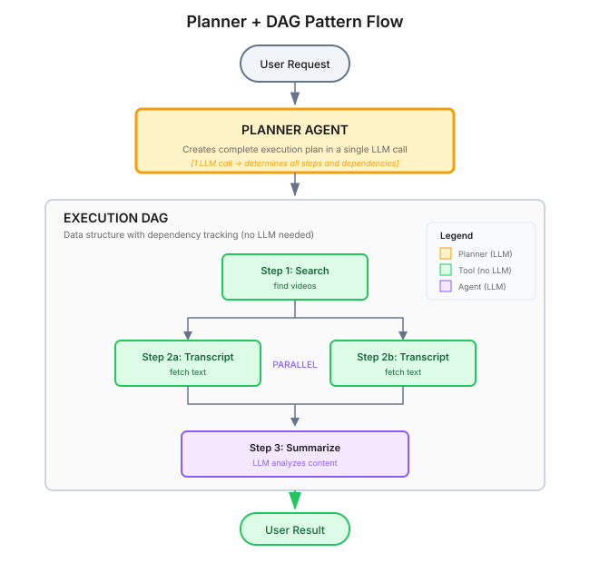

This is Part 3 of a series on building multi-agent systems. Part 1 covered clean architecture for agents (tools vs services, domain-driven design). Part 2 explored goal-aware agent coordination (distributed reasoning, event-driven handoffs).
The goal-aware pattern from Part 2 felt elegant. Agents reasoning about user goals, handing off to each other, workflows emerging from distributed intelligence rather than central control. It worked beautifully for our pork loin research task.
Then I looked at the LLM call counts.
Every agent in V2 needs to reason about the user’s goal. In our benchmark workflow (“search → fetch transcripts → summarize → write”), this adds up:
V2 Goal-Aware Pattern (actual benchmark):
Dispatcher routing (5 handoffs): 5 LLM calls
Agent validation (5 agents): 5 LLM calls
Agent execution reasoning: 6 LLM calls
Goal satisfaction checks: 5 LLM calls
Total: ~21 LLM calls (low variance across runs)When every agent needs to think, you need capable models throughout. That gets expensive.
This led us to explore a different dimension: What if we front-load the intelligence?
In this article, we shall cover:
- Why goal-aware agents have high per-step LLM costs
- The economic argument for upfront planning
- How the Planner pattern enables strategic model selection
- Implementing DAG-based execution with dependency tracking
- When predictability matters more than adaptability
- Trade-offs between the three patterns we’ve explored
The Cost Structure Problem
V1 Orchestrator Costs (actual benchmark: 17-34 calls)
The orchestrator pattern shows high variance because the LLM decides the workflow at runtime:
V1 Orchestrator Pattern (Run A - 17 calls, minimal approach):
Orchestrator: "I'll search both channels" → 2 SearchAgent calls
Orchestrator: "Now fetch transcripts" → 3 TranscriptAgent calls
Orchestrator: "Writer can synthesize directly" → 1 WriterAgent call
Plus orchestrator decision overhead: ~11 LLM calls
V1 Orchestrator Pattern (Run B - 34 calls, thorough approach):
Orchestrator: "I'll do three targeted searches" → 3 SearchAgent calls
Orchestrator: "Fetch all transcripts" → 5 TranscriptAgent calls
Orchestrator: "Summarize each, then combine" → 4 SummarizeAgent calls
Orchestrator: "Write the final document" → 1 WriterAgent call
Plus orchestrator decision overhead: ~21 LLM callsSame request, different runtime decisions, 2× cost difference.
Cost characteristics:
- Orchestrator decides scope at runtime (how many searches? skip summarization?)
- Each decision point is an LLM call
- Context accumulates at orchestrator (token costs grow with chain length)
- Unpredictable costs - you don’t know until it runs
V2 Goal-Aware Costs (actual benchmark: ~21 calls, low variance)
V2 Goal-Aware Pattern (consistent across all runs):
Dispatcher routing (5 handoffs): 5 LLM calls
Agent validation (5 agents): 5 LLM calls
Agent execution reasoning: 6 LLM calls
Goal satisfaction checks: 5 LLM calls
Total: ~21 LLM calls (low variance across runs)Cost characteristics:
- Centralized dispatcher routes tasks (1 LLM call per handoff)
- Agents validate assignments (1 LLM call per agent)
- Execution uses direct service calls where possible
- Predictable costs - ~21 calls for every request
The Economic Insight
The Planner pattern opens an architectural opportunity:
- Use a powerful model ONCE to create a complete plan
- Execute the plan mechanically (potentially with cheaper/faster models)
- Trade adaptability for predictable costs
This is the Planner + DAG pattern. The core benefit is reduced redundant reasoning - instead of every agent re-evaluating “is the goal satisfied?”, you decide the workflow once upfront.
Note on model tiers: While the pattern enables using different model tiers for planning vs execution, our reference implementation uses consistent model quality throughout. The architectural benefit is immediate (inspectable plans, reduced reasoning overhead); model tier optimization is a straightforward enhancement the pattern supports.
The Planner Pattern: Decide Everything Upfront
Core Idea
User Request
↓
Planner (powerful model): "What's the complete workflow?"
↓
ExecutionDAG (data structure - no LLM needed)
↓
Step 1 → Agent A (cheaper model - just execute)
Step 2 → Agent B (cheaper model - just execute)
Step 3 → Agent C (capable model if needed for task complexity)Cost structure (actual benchmark: 3 calls, zero variance):
V3 Planner Pattern (consistent across all runs):
PlannerAgent creates DAG: 1 LLM call
Search execution: 0 LLM calls (direct YouTube API call)
Transcript fetching: 0 LLM calls (direct service call)
Summarization × 2: 2 LLM calls (requires reasoning)
File writing: 0 LLM calls (direct file I/O)
Total: 3 LLM calls (zero variance across runs)Why so efficient? The key insight is that most workflow steps don’t need LLM reasoning:
- Search: Just call the YouTube API with parameters from the plan
- Transcript: Just fetch from YouTube’s transcript service
- File writing: Just write the formatted output to disk
Only summarization requires an LLM to reason about content. Everything else is mechanical execution of the plan. This is why V3 uses 85% fewer LLM calls than V2.

Where do the 18 eliminated calls go?
| V2 Overhead | V3 Equivalent |
|---|---|
| Dispatcher routes each handoff (5 LLM calls) | Plan specifies agents upfront (0 calls) |
| Agents validate assignments (5 LLM calls) | Plan is authoritative (0 calls) |
| Agent execution reasoning (6 LLM calls) | Steps execute mechanically (0 calls) |
| Goal satisfaction checks (5 LLM calls) | Plan defines completion (0 calls) |
The planner does more work upfront, but it’s one call instead of twenty-one distributed calls. V2’s dispatcher and validation overhead exists because agents need to dynamically figure out who should do what. V3 answers that question once, in the plan.
What You Get
1. Cost Control - Know exact number of steps before starting - Use model tiers strategically (powerful for planning, cheaper for execution) - No per-step reasoning overhead
2. Inspectable Plans
{
"goal": "Find pork loin videos from Chuds BBQ, get transcript, summarize cooking temps",
"steps": [
{
"id": "search_pork",
"agent": "search",
"description": "Search for Chuds BBQ pork loin videos",
"input": {"query": "Chuds BBQ pork loin kamado"},
"depends_on": []
},
{
"id": "fetch_transcript",
"agent": "transcript",
"description": "Get transcript for top search result",
"input": {"video_id": "$search_pork.results[0].video_id"},
"depends_on": ["search_pork"]
},
{
"id": "summarize",
"agent": "summarize",
"description": "Extract cooking temperatures and times",
"input": {"text": "$fetch_transcript.text", "title": "$fetch_transcript.title"},
"depends_on": ["fetch_transcript"]
}
]
}You can SEE this before anything runs. Validate it. Store it. Modify it.
3. Compliance & Auditability - “Show me what will happen before you do it” - Compare planned steps vs actual execution - Clear dependency chain for debugging
4. Parallel Execution Independent steps (no shared dependencies) run concurrently:
Step 1a and 1b (no dependencies) → execute in parallel
Step 2 (depends on both 1a and 1b) → waits for completionWhat You Sacrifice
1. Adaptability - Can’t change course based on findings - If search returns no relevant videos, plan still tries to fetch transcripts - Mitigation: Validate step outputs before proceeding; re-plan on unexpected results (see Hybrid Approaches below)
2. Upfront Planning Cost - Every request pays planning cost, even simple ones - V1/V2 only use LLM when needed at each step - Mitigation: Use pattern selection — route simple requests through V1, reserve V3 for complex batch jobs where the planning cost is amortized
3. Plan Quality Dependency - If planner generates invalid DAG, validation catches it but requires re-planning - Planner might hallucinate non-existent agents or capabilities - Mitigation: Validate plans against agent registry before execution; provide the planner with explicit capability lists
Implementation: The DAG Executor
With the conceptual foundation in place, let’s look at how the DAG executor actually works. The implementation needs to solve three core problems: representing the workflow as a data structure, executing steps while respecting dependencies, and resolving variable references between steps. Each piece is straightforward on its own—the elegance comes from how they compose.
What Changes in the Architecture
As with the goal-aware pattern in Part 2, the domain layer stays the same—YouTube search, transcript fetching, summarization. Those services don’t change. The Planner pattern adds a thin coordination layer on top:
src/youtube_agent_planner/
├── cli/ # Entry points (same pattern as V1/V2)
│ └── commands.py
├── agents/
│ └── planner.py # NEW: Creates DAGs from natural language
└── infra/
└── dag_executor.py # NEW: Runs DAGs with dependency trackingThe planner reuses infrastructure from both previous patterns:
- From V1 (Orchestrator): Chat client setup, agent execution patterns
- From V2 (Goal-Aware): Session management, agent registry, result types (
PartialResult,Task)
What’s genuinely new is minimal: the PlannerAgent that generates DAGs, and the DAGExecutor that runs them. This is the benefit of the layered architecture we established in Part 1—new coordination patterns don’t require rewriting business logic.
ExecutionDAG Structure
The DAG needs to capture three things: what each step does, which agent executes it, and what must complete before it can run. Here’s the core data structure:
@dataclass
class DAGStep:
id: str # Unique identifier
agent_name: str # Which agent executes
description: str # Human-readable intent
input_template: dict[str, Any] # Input (may have $variables)
depends_on: list[str] # Steps that must complete first
model_tier: str # "powerful" | "capable" | "cheap"
status: StepStatus # pending/ready/running/completed/failed
result: Any = None # Output after execution
@dataclass
class ExecutionDAG:
goal: str # User's original goal
steps: list[DAGStep] # Ordered workflow
def get_ready_steps(self, completed: set[str]) -> list[DAGStep]:
"""Get steps whose dependencies are satisfied."""
return [
step for step in self.steps
if step.status == "pending"
and all(dep in completed for dep in step.depends_on)
]
def validate(self) -> list[str]:
"""Check for cycles, missing deps, duplicate IDs."""
# Topological sort to detect cycles
# Verify all depends_on references exist
# Check for duplicate step IDsThe Execution Loop
With the data structure in place, we need a way to run it. The execution loop repeatedly finds steps whose dependencies are satisfied and runs them in parallel:
async def execute_dag(dag: ExecutionDAG, agents: dict) -> dict:
"""Execute DAG with dependency tracking and parallelism."""
completed = set()
results = {}
while len(completed) < len(dag.steps):
# Get all steps whose dependencies are satisfied
ready_steps = dag.get_ready_steps(completed)
if not ready_steps:
if len(completed) == len(dag.steps):
break # All done
else:
raise ExecutionError("Deadlock: no ready steps but workflow incomplete")
# Execute ready steps in parallel
tasks = [
execute_step(step, agents[step.agent_name], results)
for step in ready_steps
]
step_results = await asyncio.gather(*tasks, return_exceptions=True)
# Process results
for step, result in zip(ready_steps, step_results):
if isinstance(result, Exception):
# Handle failure (could trigger re-planning)
step.status = "failed"
raise ExecutionError(f"Step {step.id} failed: {result}")
else:
step.status = "completed"
completed.add(step.id)
results[step.id] = result
return resultsVariable Resolution
The execution loop handles when steps run, but there’s still the question of how steps communicate. When the transcript step needs the video ID from the search step, how does that data flow? This is where variable resolution comes in. Steps reference outputs from previous steps using $step_id.field syntax:
def resolve_variables(input_template: dict, results: dict) -> dict:
"""Resolve $step_id.field references to actual values."""
resolved = {}
for key, value in input_template.items():
if isinstance(value, str) and value.startswith("$"):
# Parse $step_id.field.nested
parts = value[1:].split(".")
step_id = parts[0]
# Navigate nested fields
result = results[step_id]
for part in parts[1:]:
if "[" in part: # Array access: results[0]
field, idx = part.split("[")
idx = int(idx.rstrip("]"))
result = result[field][idx]
else:
result = result[part]
resolved[key] = result
else:
resolved[key] = value
return resolvedExample:
# Step input template
{"video_id": "$search_pork.results[0].id"}
# Results from search_pork step
results["search_pork"] = {
"results": [
{"id": "fI86yXKlnQA", "title": "Pork Loin on the Kamado Joe"},
{"id": "2AF1ysZ8eEA", "title": "Smoked Pork Tenderloin"}
]
}
# Resolves to
{"video_id": "fI86yXKlnQA"}Model Tier Strategy (Architectural Pattern)
With the execution machinery in place—data structure, execution loop, and variable resolution—we have a working DAG executor. But the explicit plan structure opens up an optimization that’s harder to achieve with runtime coordination: strategic model selection per step.
The DAG structure enables a powerful optimization: assign different model tiers based on task complexity. Here’s what this could look like:
def get_model_for_tier(tier: str) -> str:
"""Map model tiers to actual model names."""
return {
"powerful": "claude-opus-4.5", # Planning, complex reasoning
"capable": "gpt-5.2", # General execution
"cheap": "claude-sonnet-4.5", # Simple execution tasks
}[tier]
async def execute_step(step: DAGStep, agent: BaseAgent, results: dict) -> Any:
"""Execute a single DAG step with appropriate model tier."""
# Resolve variable references
input_data = resolve_variables(step.input_template, results)
# Get model for this step's tier
model = get_model_for_tier(step.model_tier)
# Execute agent with resolved input (no goal reasoning needed)
result = await agent.execute_direct(
input_data=input_data,
model=model
)
return resultWhile our reference implementation doesn’t implement model tier selection (all agents use the same model), the pattern makes this optimization straightforward to add. The key insight is that once you have an explicit plan, you can make informed decisions about resource allocation per step.
Seeing It in Action
Theory is useful, but let’s see the planner actually work. Here’s what happens when we run our standard pork loin request through the planner CLI:
$ uv run youtube-agent-planner chat -r "I want to cook a pork loin on a Kamado.
Find techniques from Chuds BBQ and Fork and Embers.
I need temperatures, timing, and grill setup.
Save results to pork_loin_guide.md"YouTube Agent Planner - Interactive Mode
==================================================
Creates explicit execution plans before running.
Type 'exit' or 'quit' to stop.
[Planning...] Creating execution plan ✓ (5 steps)
[Plan] Goal: Find YouTube-based techniques for cooking a pork loin roast on a Kamado
grill/smoker (preferably Fork and Embers and Chuds BBQ), extract key parameters
(grill temp, setup, target internal temp, time), and save results to a markdown file.
→ yt_search_trusted_channels: Search YouTube for pork loin roast Kamado/smoker
videos focusing on Fork and Embers and Chuds BBQ channels.
→ fetch_transcript_video_1: Fetch transcript for the top search result.
(after: yt_search_trusted_channels)
→ fetch_transcript_video_2: Fetch transcript for the second search result.
(after: yt_search_trusted_channels)
→ summarize_and_extract_cook_params: From the transcripts, extract and consolidate
cooker temp targets, Kamado setup, target internal temps, and time guidance.
(after: fetch_transcript_video_1, fetch_transcript_video_2)
→ write_markdown_report: Write a markdown file summarizing the extracted cooking
techniques with citations and a parameter table.
(after: summarize_and_extract_cook_params)
[Executing...] Running DAGNotice what’s different from V1 and V2:
1. The plan is visible before execution starts. You can see exactly what will happen—which agents, in what order, with what dependencies. No surprises.
2. Parallel steps are explicit. fetch_transcript_video_1 and fetch_transcript_video_2 both depend only on the search step, so they’ll run concurrently. The summarization step waits for both.
3. The LLM reasoning happened once. That single [Planning...] step is the only time the planner LLM runs. Everything after is mechanical execution.
Execution Flow
With verbose logging enabled (-v), we can watch the DAG execute:
[Executor] Starting DAG execution
[Executor] Ready steps: yt_search_trusted_channels
[search] Executing: Search YouTube for pork loin roast Kamado/smoker videos...
[search] ✓ yt_search_trusted_channels completed (1079ms)
[Executor] Ready steps: fetch_transcript_video_1, fetch_transcript_video_2 (parallel)
[transcript] Executing: Fetch transcript for the top search result...
[transcript] Executing: Fetch transcript for the second search result...
[transcript] ✓ fetch_transcript_video_1 completed (6ms)
[transcript] ✓ fetch_transcript_video_2 completed (9ms)
[Executor] Ready steps: summarize_and_extract_cook_params
[summarize] Executing: From the transcripts, extract and consolidate cooker temp...
[summarize] ✓ summarize_and_extract_cook_params completed (37266ms)
[Executor] Ready steps: write_markdown_report
[writer] Executing: Write a markdown file summarizing the extracted cooking...
[writer] ✓ write_markdown_report completed (19673ms)
[Executor] DAG complete: 5/5 steps succeededThe executor shows each step as it becomes ready, marks parallel steps explicitly, and reports timing. You can see the transcript fetches ran concurrently (both started before either completed).
What the Output Looks Like
The generated test_planner_pork_loin.md (snippet):
# Pork Loin Roast on a Kamado Grill/Smoker — Temps & Timing
## Sources (YouTube)
- Chuds BBQ (video_id: 2AF1ysZ8eEA)
- Chuds BBQ (video_id: fI86yXKlnQA)
## Summary
The video(s) focus on how to make a **lean boneless pork loin roast** come out
**juicy, tender, and "holiday roast" worthy** using **brining, moderate pit temps
(~275–300°F), and pulling at ~140–145°F internal**, then finishing with a glaze.
...
## Temps, timing, and doneness guidance
- **Pit temp:** ~**275–300°F** (both approaches cluster here).
- **Pull temp:** about **140–145°F internal**.
- **Cook time:** ~2–4 hours depending on method and size.
## Practical takeaways
- **Brining is the unlock** for pork loin (wet or dry).
- **Finish matters:** sear/grill + glaze or mop + butter-rest.
- **Serve like a holiday roast:** slice thin, consider gravy/sauce.The same structure we got from V1 and V2—but with predictable cost and an inspectable plan.
Comparison: Three Patterns
Cost Analysis
| Pattern | LLM Calls* | Variance | Why |
|---|---|---|---|
| V1 Orchestrator | 17-34 | High | LLM decides workflow at runtime - unpredictable |
| V2 Goal-Aware | ~21 | Low | Dispatcher routes + agents validate, then execute via direct service calls |
| V3 Planner+DAG | ~3 | None | Single planning call, then mechanical execution via direct service calls |
Measured LLM calls for a “search → fetch transcripts → summarize → write” workflow using the reference implementation. Numbers are based on multiple benchmark runs.
The key insight here is predictability, not just efficiency.
V1 Orchestrator breakdown (17-34 calls): The orchestrator makes LLM calls at each decision point, plus each sub-agent makes its own calls. The variance comes from runtime decisions:
| Decision Point | Observed Variance |
|---|---|
| Search strategy | 1-3 searches, sequential or parallel |
| Step skipping | Summarization sometimes skipped entirely |
| Delegation phrasing | Different wording affects sub-agent behaviour |
With verbose logging enabled (-v flag), we can see these decisions in action:
# Run A (17 calls) - Minimal approach, skips summarization
SearchAgent called with: Kamado pork loin Fork and Embers
SearchAgent called with: Chuds BBQ pork loin kamado
TranscriptAgent called with: Fetch transcript for video FsbwQI-EI-k...
TranscriptAgent called with: Fetch transcript for video 2AF1ysZ8eEA...
TranscriptAgent called with: Fetch transcript for video fI86yXKlnQA...
WriterAgent called with: Write a markdown file... # No SummarizeAgent!
# Run B (25 calls) - Thorough approach with summarization
SearchAgent called with: Find YouTube videos where Fork and Embers...
SearchAgent called with: Find YouTube videos where Chuds BBQ...
SearchAgent called with: Find top YouTube videos about cooking pork loin...
TranscriptAgent called with: ...
SummarizeAgent called with: From the provided transcripts, extract...
WriterAgent called with: ...Run A decided the WriterAgent could synthesize directly from transcripts. Run B added a summarization step. Both produced valid outputs, but with different costs.
V2 Goal-Aware breakdown (~21 calls, low variance): The dispatcher pattern centralizes routing decisions:
- Dispatcher routing: 5 calls (one per handoff in the chain)
- Agent validation: 5 calls (each agent confirms assignment)
- Execution reasoning: 6 calls (query extraction, goal reasoning)
- Goal satisfaction checks: 5 calls (each agent evaluates completion)
In benchmark testing, V2 produced approximately 21 calls across runs with low variance. Why? The dispatcher routes each task to a specific agent (1 LLM call), the agent validates the assignment (1 LLM call), then executes using direct service calls where possible. The validation overhead ensures correct routing but adds consistent cost.
V3 Planner breakdown (~3 calls): - PlannerAgent: 1 call (creates the complete DAG upfront) - Summarization: 2 calls (only step requiring LLM reasoning) - All other execution: 0 LLM calls (direct service calls)
Search, transcript fetching, and file writing are executed mechanically via direct service calls - no LLM reasoning needed. Only summarization requires LLM involvement during execution. This is why V3 is dramatically more efficient: it front-loads all reasoning into the planning phase.
When to Use Each Pattern
| Question | Best Pattern | Rationale |
|---|---|---|
| Building a conversational interface? | V1 Orchestrator | Back-and-forth, context maintenance |
| Need agents to adapt to findings? | V2 Goal-Aware | Goal-aware reasoning, emergent workflows |
| Running high-volume batch processing? | V3 Planner+DAG | Lowest per-request cost |
| Need to approve workflows before execution? | V3 Planner+DAG | Inspectable plans |
| Compliance/audit requirements? | V3 Planner+DAG | Full execution trace |
| Complex dependencies between steps? | V3 Planner+DAG | Explicit DAG prevents mistakes |
| Debugging complex workflows? | V3 Planner+DAG | Compare plan vs execution |
| Cost is primary constraint? | V3 Planner+DAG | Strategic model tier usage |
| Adaptability is primary constraint? | V2 Goal-Aware | Responds to what it finds |
| Simplicity is primary constraint? | V1 Orchestrator | Well-understood pattern |
Quick Decision Tree
Which Multi-Agent Pattern Should You Use?
─────────────────────────────────────────
│
▼
┌──────────────────────────────┐
│ Need conversational │
│ back-and-forth with user? │
└──────────────────────────────┘
│ │
YES NO
│ │
▼ ▼
┌──────────────┐ ┌──────────────────────────┐
│ V1 │ │ Do agents need to │
│ Orchestrator │ │ adapt based on findings?│
└──────────────┘ └──────────────────────────┘
│ │
YES NO
│ │
▼ ▼
┌──────────────┐ ┌──────────────────────┐
│ V2 │ │ Need to inspect/ │
│ Goal-Aware │ │ approve plan first? │
└──────────────┘ └──────────────────────┘
│ │
YES NO
│ │
▼ ▼
┌──────────────┐ ┌──────────────┐
│ V3 │ │ Start │
│ Planner+DAG │ │ with V1 │
└──────────────┘ └──────────────┘The short version: - V1 Orchestrator: Start here. Simple, conversational, well-understood. - V2 Goal-Aware: When workflows should emerge from agent reasoning. - V3 Planner+DAG: When you need predictability, auditability, or cost control.
Design Space Summary
We’ve now explored multi-agent coordination across three dimensions:
1. Architecture (Part 1): How to structure clean agent code - Tools vs Services separation - Domain-Driven Design for agent systems - Strategic testing with minimal mocking
2. Who Coordinates (Part 2): Central vs distributed - V1: Central orchestrator directs everything - V2: Distributed agents self-coordinate
3. When to Decide (Part 3): Runtime vs upfront - V1/V2: Decide at each step (adaptive) - V3: Decide everything upfront (predictable)
Limitations and Trade-offs
What Planner+DAG Can’t Do Well
1. Handle Unexpected Conditions
Plan: Search → Fetch Transcript → Summarize
Reality: Search returns no relevant videos
Problem: Plan still tries to fetch transcript for non-existent video
Mitigation: Error handling + re-planning (adds cost)2. Conversational Workflows - User wants to refine based on intermediate results - V1 orchestrator maintains conversation context naturally - V3 would need to re-plan for each user input
3. Exploratory Research - “Find interesting videos about X” (undefined criteria) - V2 goal-aware agents can explore and adapt - V3 needs concrete plan upfront
When Runtime Decisions Win
- User needs evolve during conversation
- Workflow depends on quality of intermediate findings
- Cost sensitivity when many requests don’t need full workflow
- Unknown complexity until you start
When Upfront Planning Wins
- High-volume processing (cost matters more than adaptability per request)
- Compliance requires pre-approval of execution plan
- Complex dependencies easy to get wrong manually
- Need to estimate cost/time before starting
- Debugging is critical (plan as reference for “what should have happened”)
Hybrid Approaches
Adaptive Planning
Best of both worlds: plan high-level structure, re-plan on surprises.
async def adaptive_execution(user_goal: str) -> Any:
"""Execute with planning but adapt when needed."""
# Create initial plan
plan = await planner.create_plan(user_goal, model="powerful")
for step in plan.steps:
try:
# Execute step with cheap model
result = await execute_step(step, model="cheap")
# Validate result quality
if not is_acceptable(result, user_goal):
# Re-plan remainder with new context
remaining_plan = await planner.replan(
original_goal=user_goal,
completed_steps=completed,
issue=f"Step {step.id} produced inadequate result",
model="powerful"
)
plan = merge_plans(completed, remaining_plan)
except ExecutionError as e:
# Execution failed - re-plan
plan = await planner.replan(
original_goal=user_goal,
completed_steps=completed,
failure=str(e),
model="powerful"
)Cost characteristics: - Start with single planning call (optimistic) - Add re-planning only when needed (failures, quality issues) - Still uses cheap models for most execution
Tiered Model Selection
# Define model requirements per agent
AGENT_MODEL_REQUIREMENTS = {
"search": "cheap", # Simple YouTube search
"transcript": "cheap", # Mechanical transcript fetch
"summarize": "capable", # Needs understanding
"writer": "cheap", # Template-based file writing
"synthesize": "powerful", # Complex reasoning across sources
}
# Planner respects these when assigning model tiers
def assign_model_tier(step: DAGStep) -> str:
"""Assign model tier based on agent requirements."""
return AGENT_MODEL_REQUIREMENTS[step.agent_name]Key Takeaways
These principles apply regardless of which agent framework you choose:
Front-loading intelligence reduces per-request costs - A single planning call can replace dozens of distributed reasoning calls. When you’re processing volume, this adds up.
Explicit plans enable inspection and approval - Unlike runtime orchestration, you can see, validate, and modify the workflow before it runs. This matters for compliance, debugging, and user trust.
DAG structures make parallelism natural - When dependencies are explicit, the executor can automatically parallelize independent steps. No manual coordination needed.
Variable resolution connects steps cleanly - The
$step_id.fieldsyntax lets steps reference each other’s outputs without coupling. Each step remains independent.The pattern enables—but doesn’t require—model tier optimization - Once you have an explicit plan, you can assign different models per step. The architecture supports it even if you don’t use it immediately.
Predictability and adaptability are genuine trade-offs - The planner can’t adapt to surprises mid-execution. If your workflow needs to change course based on findings, goal-aware agents (V2) are the better choice.
Conclusion
The insight that made the Planner pattern compelling wasn’t just predictability - it was economics.
Goal-aware agents (V2) are elegant, but every agent needs to reason about the goal. That means every agent needs a capable model. When you’re processing hundreds or thousands of requests, those costs add up.
The Planner pattern lets you be strategic: use a powerful model once to create a complete plan, then execute the plan with reduced per-step overhead. For high-volume scenarios, this can significantly reduce costs compared to goal-aware agents.
But it’s a trade-off: you sacrifice the adaptability that makes goal-aware agents powerful. The workflow can’t change course based on what it finds. If that adaptability matters more than cost, goal-aware agents are still the right choice.
The Three Patterns, Summarized:
- V1 Orchestrator: Simple, conversational, well-understood
- V2 Goal-Aware: Adaptive, emergent, distributed reasoning
- V3 Planner+DAG: Predictable, economical, auditable
Choose based on your constraints: cost, adaptability, compliance, simplicity.
What’s Next: This completes our exploration of multi-agent coordination patterns. All three implementations are available in the reference codebase. Try them, break them, adapt them to your needs.
The patterns aren’t mutually exclusive. Real systems might use:
- V1 for user-facing conversational interfaces
- V3 for backend batch processing
- V2 for exploratory research workflows
Multi-agent systems aren’t mysterious. They’re software systems with clear architectural choices. Choose the pattern that fits your constraints.
View the Code
All patterns described in this series are implemented in the reference codebase:
- V1 Orchestrator Pattern - Covered in Part 1
- V2 Goal-Aware Pattern - Covered in Part 2
- V3 Planner+DAG Pattern - This post’s focus
- Full Source Code - Complete implementation with tests
The code is meant to be read and learned from, not just used; hopefully you find it useful!